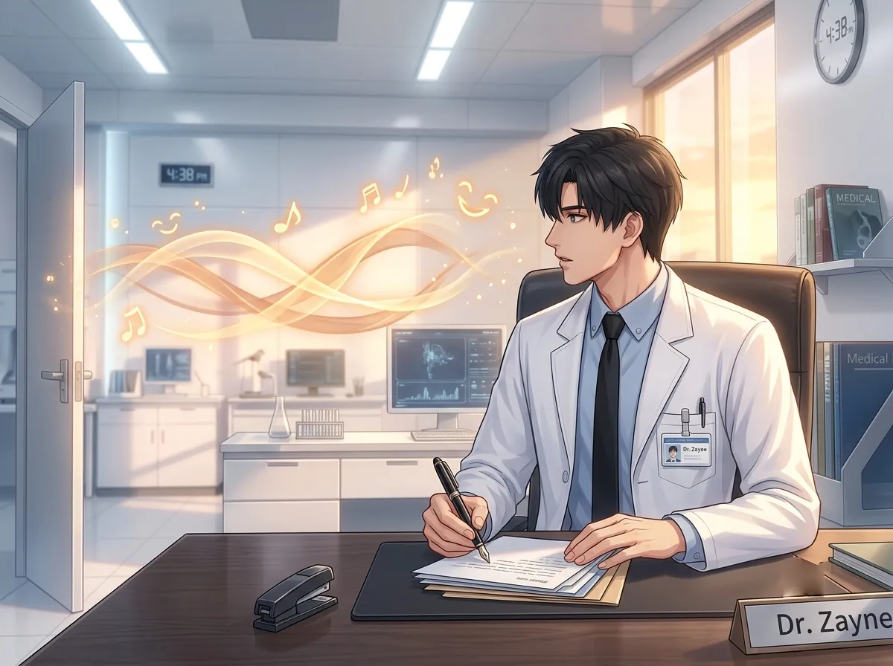
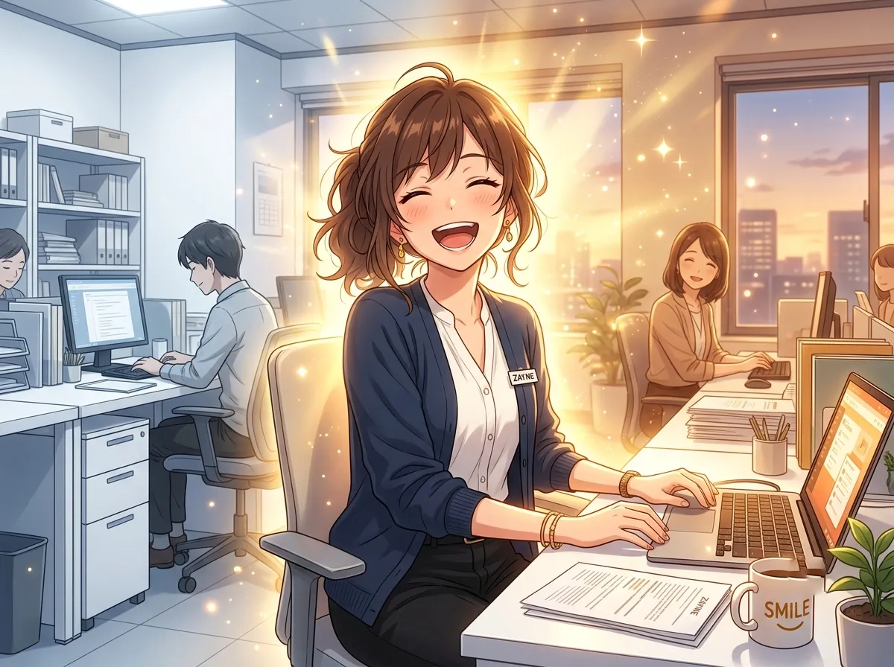
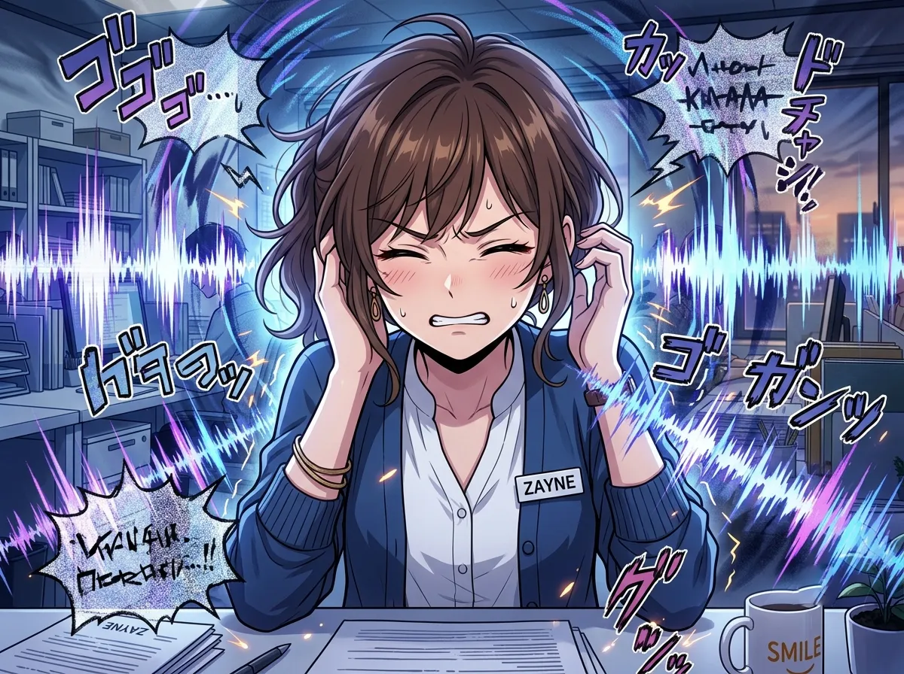
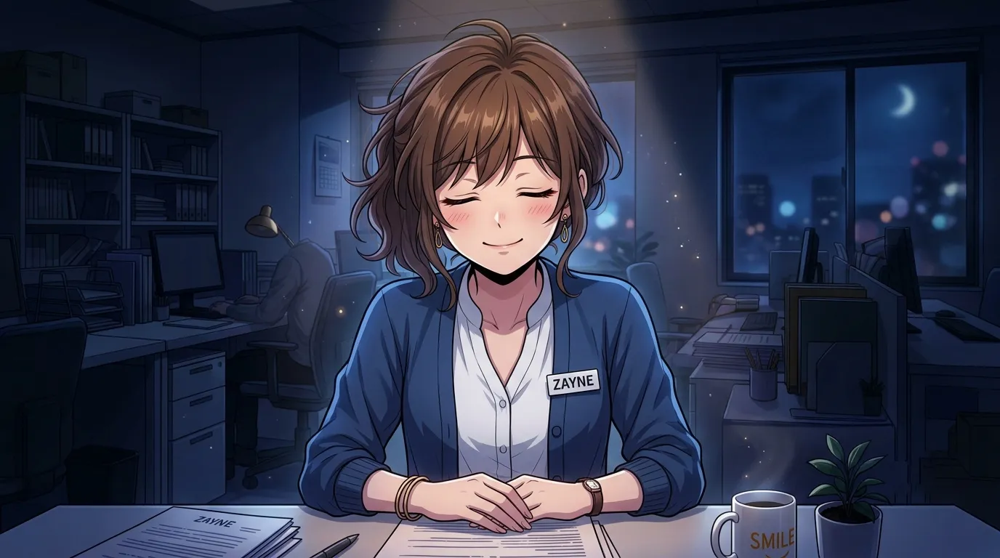
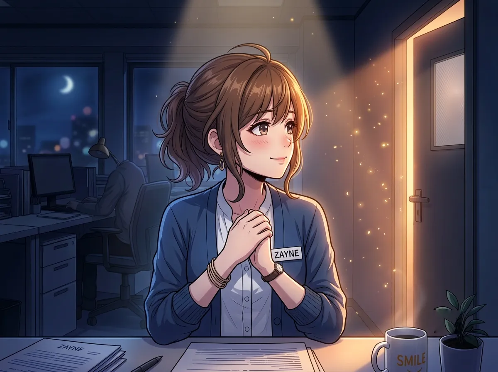

She laughs. He stops. He pretends he didn't.
She laughed. He stopped.
Not a dramatic stop. Not a visible pause. Just a tiny one. A half-second where his hand stopped writing. Where his attention shifted. Where everything in the room became background except for her.
He didn't mean to. It just happened. She laughed, and his body reacted before his mind caught up.
He spent years learning to block out noise. To focus on what matters. To ignore everything that doesn't require his attention.
He has never been able to ignore her laughter.
This is the story of that sound.

He is writing. Notes. Charts. Things that need to be done.
She is in the room. He knows she is there. He is aware of her presence, the way he is aware of the temperature or the light. Background. Constant. Easy to ignore.
Then she laughs.
His hand stops. His pen lifts from the paper. He doesn't know how long he stops. A second. Two. Long enough to notice.
He looks up. She's laughing at something on her phone. Something that isn't him. Something that she finds funny. Something that has nothing to do with him.
He watches her. For a moment. Just a moment. Then he looks back down at his notes. He picks up his pen. He starts writing again.
He doesn't know why he stopped. He didn't decide to stop. It just happened.
He has trained himself to not stop. To not react. To not let anything break his concentration. He has spent years learning to ignore the sounds around him. The beeping of monitors. The pages turning. The footsteps in the hallway.
He can't ignore her laughter. It breaks through everything. It finds him. It makes him stop.
He doesn't know why. He only knows that it does. And that he can't control it.

His office is white. Sterile. Controlled.
He chose white because white is neutral. White doesn't distract. White doesn't announce itself. White is the color of nothing. The color of safe.
Her laughter changes that. Her laughter turns the white room into something else. Something warmer. Something less clinical. Something more like a place where people live.
He notices the shift. He doesn't know how to name it. He just feels it. The air is different. The silence is different. The white is less white.
He has never told her this. He doesn't know how. He doesn't know how to say: "Your laughter changes the temperature of my office."
He doesn't know why her laughter changes the room. He doesn't know why the white doesn't feel like white when she laughs. He doesn't know why the silence feels less empty.
He just notices. Every time. He notices the shift. He notices the warmth. He notices that the room feels less like a place where he works and more like a place where he lives.
He doesn't tell her. He doesn't know how. He doesn't know how to say: "Your laughter makes the white less cold."

He tries not to hear it.
He tells himself that he doesn't care. He tells himself that it's just a sound. Just another sound. Just another thing he can ignore.
He can't.
He has tried. He has tried to block it out. He has tried to focus on his work. He has tried to pretend that it doesn't matter.
It always matters. Her laughter always matters. He hears it and something in him shifts. Something he can't control. Something he doesn't want to control.
He doesn't tell her this. He doesn't tell anyone. He just keeps trying to ignore it. And keeps failing.
He has tried. He has tried to ignore her laughter. He has tried to treat it like any other sound. He has tried to not let it affect him.
He can't. He can't ignore it. He can't treat it like any other sound. He can't pretend it doesn't affect him.
Because it does. It affects him. Every time. He stops. He listens. He remembers.
He doesn't know what to do with that. He doesn't know how to make it stop. He doesn't know if he wants to make it stop.

She laughed. Hours ago. In the hallway. Someone told her something funny. She laughed. A real laugh. A full laugh.
He heard it through the door. He was on the other side. He could have ignored it. He could have not noticed it. He was on the other side of a door. He didn't have to hear it.
He heard it. He noticed it. He remembered it.
Hours later, he is alone in his office. The paperwork is done. The patients are gone. The lights are off. He is sitting in the dark. And he hears it. The echo of her laughter. The memory of the sound.
He doesn't know why he remembers. He doesn't know why it stays. He doesn't know why he can't let it go.
He doesn't tell her. He will never tell her. He keeps the sound to himself. The sound of her laughter. The only sound he ever wants to remember.
He hears it hours later. He hears it days later. He hears it in the quiet moments when there is nothing else to hear.
Her laughter stays. It doesn't leave. It doesn't fade. It is always there. In the back of his mind. In the corner of his consciousness. A sound that belongs to him now.
He doesn't know why it stays. He only knows that it does. And that he doesn't want it to leave.

He wants to hear it again.
He doesn't admit it. He doesn't say it out loud. He doesn't even think it in complete sentences. But he wants to hear it again. Her laughter. The sound that breaks through everything. The sound that warms the room. The sound that stays with him.
He doesn't know how to make it happen. He doesn't know how to make her laugh. He doesn't know how to be the reason for the sound he loves.
He knows how to make people feel better. He knows how to fix things. He knows how to heal.
He doesn't know how to make someone laugh. He doesn't know how to be funny. He doesn't know how to be the one who creates the sound he wants to hear.
He doesn't tell her this. He doesn't tell anyone. He just waits. For the sound to happen again. For the laughter to fill the room again. For the warmth to come back.
He wants to hear her laughter again. He wants to be the reason for it. He wants to be the one who makes that sound come out of her.
He doesn't know how. He doesn't know how to be funny. He doesn't know how to make her laugh. He only knows how to be quiet. How to be steady. How to be the one who listens.
He listens. He always listens. He hears her laughter. He remembers it. He holds onto it. And he waits for the next time.
He doesn't tell her. He will never tell her. But he waits. For the sound. For the warmth. For the laughter.
Zayne hears her laughter. Every time. He stops. He pretends he didn't. He goes back to work.
But the sound stays. It stays in the white room. It stays in his memory. It stays in the quiet moments when there is nothing else to hear.
He doesn't tell her. He doesn't know how. He doesn't know how to say: "Your laughter is the only sound I can't ignore."
He doesn't say it. He doesn't need to. He just hears it. He just remembers it. He just waits for the next time.
Her laughter is the sound that makes the white less cold. The sound that breaks through everything. The sound he will always want to hear.